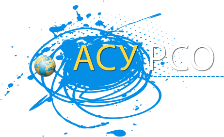
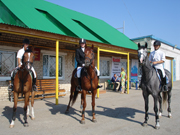

Электронный журнал
Уважаемые учащиеся и родители, данные для доступа к электронному журналу (логин, пароль) вы можете узнать у вашего классного руководителя.
Адрес АСУ РСО: nw.asurso.ru
АСУ СРО - комплексная автоматизированная информационная система, объединяющая в единую сеть образовательные учреждения и органы управления образованием в пределах города, сельского или городского района (округа).
Информация для педагогов по работе с электронным журналом АСУ РСО
Сведения об образовательной организации
В соответствии с Постановлением Правительства Р.Ф. от 10 июля 2013 г. № 582 "Об утверждении Правил размещения на официальном сайте образовательной организации в информационно-телекоммуникационной сети "Интернет" и обновления информации об образовательной организации", и в соответствии с приказом Федеральной службы по надзору в сфере образования и науки от 29.05.2014 No 785 «Об утверждении требований к структуре официального сайта образовательной организации в информационно-телекоммуникационной сети «Интернет» и формату представления на нем информации» раздел информация об образовательной организации к вашим услугам: здесь.
Телефонная "горячая линия" для родителей по вопросам деятельности общеобразовательных учреждений и электронные приемные
Прием обращений граждан и юридических лиц по телефонной «горячей линии» осуществляется с понедельника по пятницу с 9:00 до 16:00 часов, кроме выходных и праздничных дней, без учета обеденного перерыва по телефонам 8 (846) 572-04-81, 8 (846) 572-04-82.
Страница логопеда
Работа школьного логопеда существенно отличается от работы логопеда в детском саду и поликлинике. Школьный логопед занимается коррекцией не только устной, но и письменной речи, т.е. работает над специфическими (логопедическими) ошибками чтения и письма.
Конно-спортивная школа

Основной вид деятельности детско-юношеской конно-спортивной школы - образовательная, т.е. обучение всех желающих основам верховой езды и конного спорта. Занятия проводят высококвалифицированные тренеры-преподаватели, окончившие Московскую Академию физической культуры, специализация "Конный спорт". В этом учебном году сформировано 12 спортивных групп общей численностью 143 человека. Запись в группы производится с 10 лет, в пони-группу для детей с 6 лет.